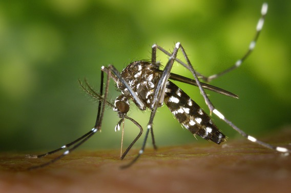
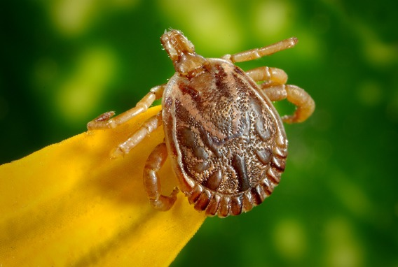

Mosquitoes.
Out of sight.
Ticks.
Out of mind.
You.
Outside.
You already have 99 problems.
Let us take care of the rest.
Relax outside. Undisturbed.
Barrier Sprays. Effective against pests. Harmless for children.
Kick back and enjoy your yard like never before! Whether you are reclining in your hammock with a great book or having your friends over for BBQ, you can be sure that pests won't be bothering you. Barrier sprays use a naturally-derived solution to kill mosquitoes and ticks while leaving your family unharmed.
Rediscover and reconnect with nature from the comfort of your own back yard!
Contact us now for a free consultation.
We will visit your property and make recommendations specific to your needs. A typical yard is treated once every three weeks for maximum effect.
We're so confident that we will rid your yard of pests that we offer a 100% satisfaction guarantee.
F.A.Q.
How does the treatment work?
The treatments work by effectively eliminating all adult mosquitoes onsite and by leaving a residue on the foliage and and vegetation that we spray. In addition we apply a 2nd step, a granular larvacide to eliminate the thousands of eggs just waiting to hatch.
Why a 2 Step Program?
We want to offer a complete mosquito management program. The granular larvacide eliminates the eggs waiting to hatch and adult residue to knock out all the adult mosquitoes breeding and vegetating in your yard.
Does anyone need to be home to accept service?
No—provided we have access to any fenced areas and domestic animals can be kept indoors our clients are not required to be home. After each service the technician will leave a courtesy card indicating services were completed.
How often do we need service?
We recommend treatment every 21 days with our conventional products.
Are the products safe for me, my kids, and pets?
Yes all of our products and services are safe for people, pets and other life in the area. However, we do require the following dry times before resuming normal outdoor activities (Conventional spray: 45min-1hr).
What if it rains the same day of my scheduled service?
If it rains the day of service your appointment will be rescheduled and you will receive new appointment information from our office.
Will the treatment affect my neighbors, pets, or property?
No. Our solutions are water-based. With proper application the products will only help your neighbor.
Is it safe for my ornaments, trees, plantings and trees?
Yes. Both the organic & conventional products are safe for the plants in your landscape. We do not spray open blooms or flowering perennials and annuals because they usually get good light and attract beneficial insects and pollinators.
Is there any smell associated with the product?
No. The product is both odor-free and colorless.
Can my garden be treated?
We suggest washing all vegetables prior to consumption, if organic we offer an Organic Option.